Electrotherapy
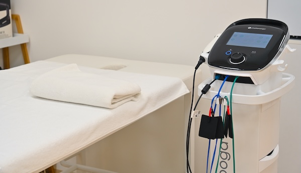
Bol, otok ili oslabljen mišić? Terapeutske struje (TENS, NMES) smiruju bol i „bude" mišiće — bez lekova.
Smirena i stručna nega: savremene terapije za oporavak, smanjenje bola i bolju funkciju.

Pogledajte naše terapije i kliknite na karticu za detalje.

Bol, otok ili oslabljen mišić? Terapeutske struje (TENS, NMES) smiruju bol i „bude" mišiće — bez lekova.
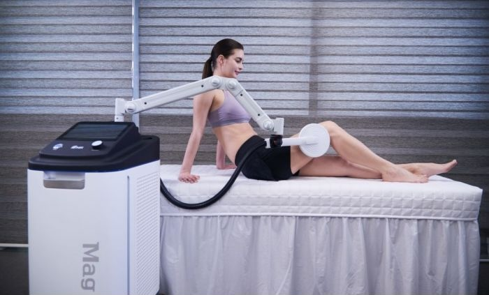
Dubinski bol u zglobu, leđima ili peti? Magnetno polje deluje kroz odeću, bez dodira — uz poseban program za karlično dno i inkontinenciju.
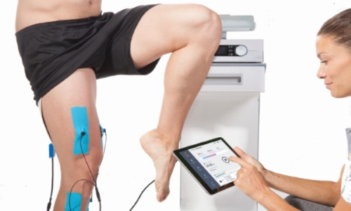
Prijatna dubinska toplota (TECAR) ubrzava krvotok i oporavak tetiva, mišića i zglobova — omiljena kod sportista.
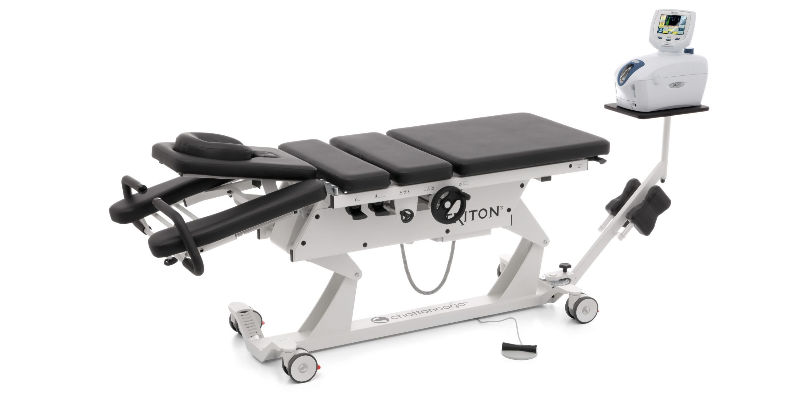
Diskus hernija, išijas ili ukočen vrat? Nežno mašinsko istezanje kičme (Triton 6M) rasterećuje disk i nervni koren.
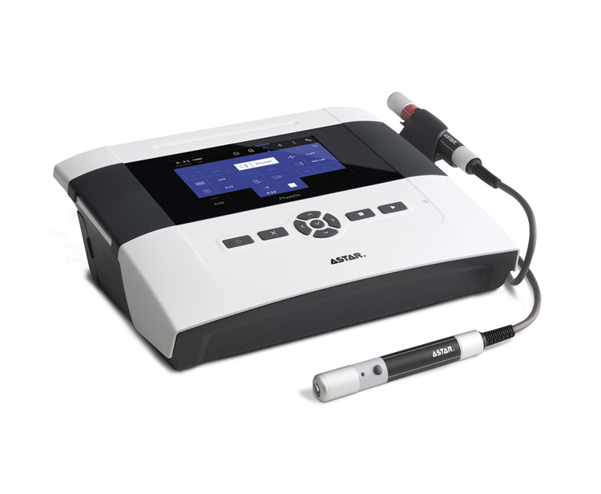
Uporan bol ili sveža povreda? Laser ubrzava zarastanje i smiruje bol — ne boli, ne greje, traje svega par minuta.
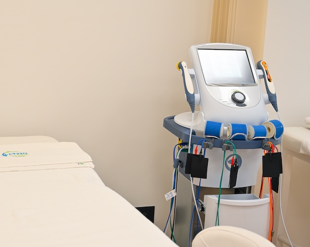
Duboka mikromasaža zvukom za tetive, ligamente i ožiljke — poboljšava elastičnost i zarastanje mekih tkiva.
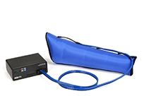
Teške, otečene noge? Talasi vazdušne masaže „iscede" višak tečnosti — laganije noge već posle prve sesije.
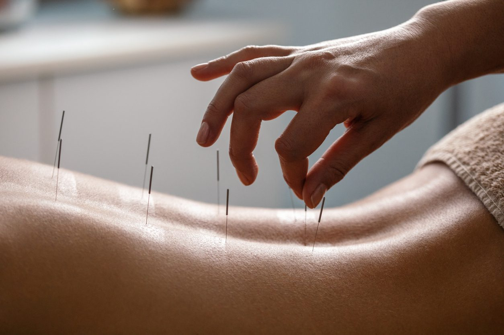
Bol, glavobolje, stres ili nesanica? Tanke sterilne igle na pravim tačkama — provereno olakšanje bez lekova.
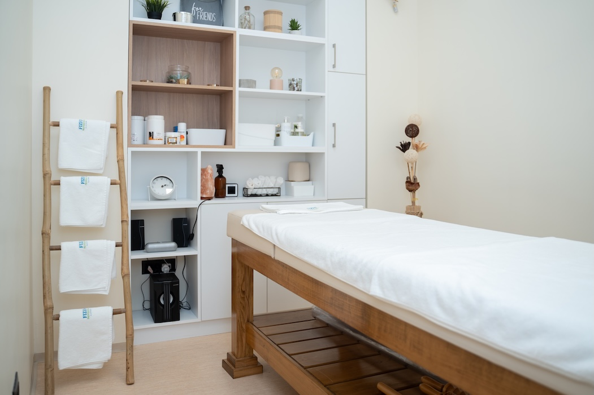
Relax, sportska, terapijska, anticelulit ili maderoterapija — pritisak i fokus po vašoj meri, parcijalno ili celo telo.
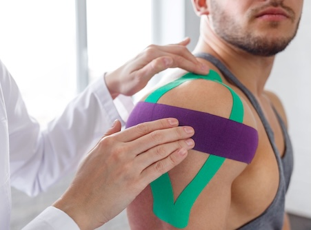
Elastične trake koje podržavaju mišić i zglob u pokretu — trče, plivaju i rade sa vama do 5 dana.
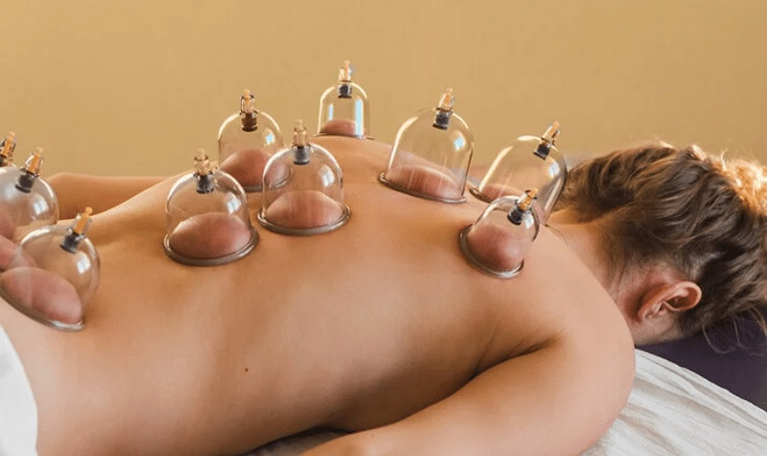
Vakuum čašice opuštaju stegnuta leđa i tvrdokorne čvorove (trigger tačke) — duboko olakšanje bez jakog pritiska.
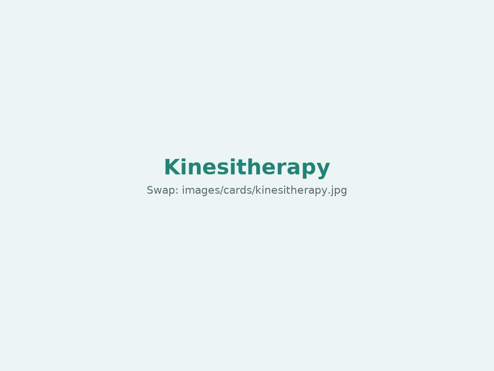
Vođene vežbe uz terapeuta — vraćaju snagu, pokretljivost i sigurnost posle povrede, operacije ili dugog mirovanja.
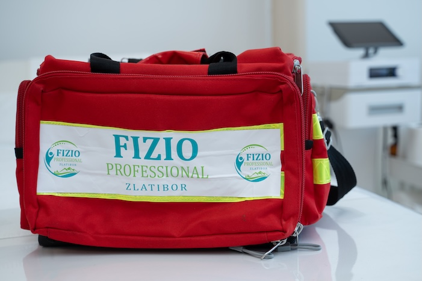
Fizioterapeut na vašem terenu: pokrivamo treninge, utakmice i turnire — licencirani tim i prenosiva oprema.
Prijatan ambijent Zlatibora, individualni planovi i oprema vodećih proizvođača. Naš cilj je siguran i trajan povratak funkciji i aktivnostima koje volite.
Pon–Pet 10–18h • Subota 10–15h
Ulica Sportova 24B, 31315 Zlatibor
„Igor i još dvoje fizioterapeuta su veoma pažljivi. Pažljivo saslušaju i procenili su moju povredu. Već posle nekoliko poseta osećala sam se mnogo bolje."
— Patty D. · Google recenzija (prevod sa engleskog)
„Profesionalno i ljubazno osoblje koje je zaista maksimalno posvećeno svojim klijentima. Preporuka svima koji traže kvalitetne fizioterapeutske usluge!"
— Violeta K. · Google recenzija
„Vrhunski opremljen fizio centar, sa sjajnim i stručnim osobljem. Za svaku preporuku."
— Miodrag R. · Google recenzija
📍 Ulica Sportova 24B, 31315 Zlatibor • 📞 +381 65 933 1 733 • ✉️ fiziozlatiborpro@gmail.com • 📷 @fizio_professional
Najbrže — pišite nam:
E-pošta: fiziozlatiborpro@gmail.com
Telefon: +381 65 933 1 733
Instagram: @fizio_professional